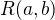
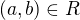
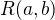
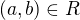

Logic and Proof
14 Relations in Lean
In the last chapter, we noted that set theorists think of a binary
relation  on a set
on a set  as a set of ordered pairs, so that 
really means . An alternative is to think of as a
function which, when applied to
as a set of ordered pairs, so that 
really means . An alternative is to think of as a
function which, when applied to  and
and  , returns the proposition
that holds. This is the viewpoint adopted by Lean: a binary
relation on a type
, returns the proposition
that holds. This is the viewpoint adopted by Lean: a binary
relation on a type A is a function A → A → Prop. So, if R is a
binary relation on A and we have a b : A, then R a b is a
proposition.
As in informal mathematics, we often wish to use infix notation for relations. We will see below that Lean supports this practice.
14.1 Order Relations
We can reason about partial orders in Lean by fixing a type, A, and a
binary relation, R, and working under the hypotheses that A is
reflexive, transitive, and antisymmetric:
The parameter and hypothesis commands are similar to the
variable and premise commands, except that parameters are fixed
within a section. In other words, if you prove a theorem about R in
the section above, you cannot apply that theorem to another relation,
S, without closing the section. Since the parameter R is fixed,
Lean allows us to define notation for R, to be used locally in the
section.
In the example below, having fixed a partial order, R, we define the
corresponding strict partial order and prove that it is, indeed, a
strict order.
Notice that we have used the command open eq.ops to avail ourselves
of the extra notation for equality proofs, so that the expression
`a = c` ▸ `a ≤ b` denotes a proof of c ≤ b.
In the exercises, we ask you to show the other direction of this: from a strict partial order we can define a partial order.
14.2 Orderings on Numbers
Conveniently, Lean has the normal orderings on the natural numbers, integers, and so on defined already.
There are many theorems in Lean that are useful for proving facts about inequality relations. We list some common ones here.
zero_le : ∀ a : A, 0 ≤ aself_lt_succ : ∀ a : A, a < a + 1le_succ : ∀ a : A, a ≤ a + 1le.trans : ∀ a b c : A, a ≤ b → b ≤ c → a ≤ clt.trans : ∀ a b c : A, a < b → b < c → a < clt_of_lt_of_le : ∀ a b c : A, a < b → b ≤ c → a < clt_of_le_of_lt : ∀ a b c : A, a ≤ b → b < c → a < cle_of_lt : ∀ a b : A, a < b → a ≤ b
14.3 Exercises
Replace the
sorrycommands in the following proofs to show that we can create a partial orderR'out of a strict partial orderR.open eq.ops section parameters {A : Type} {R : A → A → Prop} hypothesis (irreflR : irreflexive R) hypothesis (transR : transitive R) local infix < := R definition R' (a b : A) : Prop := R a b ∨ a = b local infix ≤ := R' theorem reflR' (a : A) : a ≤ a := sorry theorem transR' {a b c : A} (H1 : a ≤ b) (H2 : b ≤ c): a ≤ c := sorry theorem antisymmR' {a b : A} (H1 : a ≤ b) (H2 : b ≤ a) : a = b := sorry end Complete the following proof. Note: we write
(1 : ℕ)instead of just1so that Lean does not confuse the natural number1with the integer, rational, or so on.open nat example : (1 : ℕ) ≤ (4 : ℕ) := sorry Only one of the following two theorems is provable. Figure out which one is true, and replace the
sorrycommand with a complete proof.open eq.ops section parameters {A : Type} {a b c : A} {R : A → A → Prop} hypothesis (Rab : R a b) hypothesis (Rbc : R b c) hypothesis (nRac : ¬ R a c) -- Prove one of the following two theorems: theorem R_is_strict_partial_order : irreflexive R ∧ transitive R := sorry theorem R_is_not_strict_partial_order : ¬(irreflexive R ∧ transitive R) := sorry end